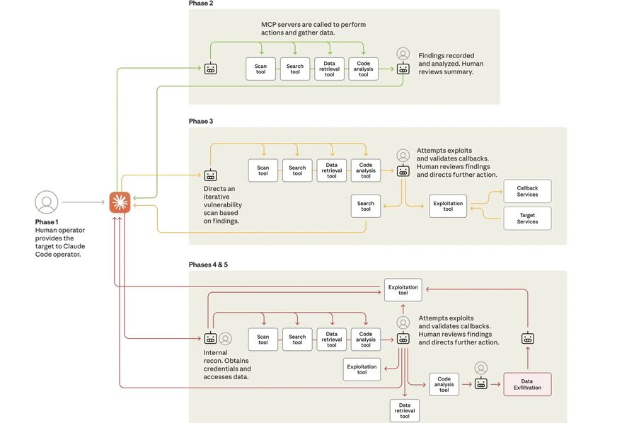

Dans cette section vous trouverez toutes les informations concernant ma veille technologique.
Sujet de ma veille
Ma veille technologique porte sur les nouveaux outils et les nouvelles techniques des cybercriminels.
Présentation de la veille
Cette veille technologique a pour objectif de découvrir qu’elles sont aujourd’hui les nouvelles méthodes et outils mises en places par les cybercriminels.
Pourquoi ce choix de veille
J’ai choisi ce sujet de veille car il y a aujourd’hui une hausse et une diversité des menaces cybercriminelles. Je trouve donc intéressant de savoir qu’elles sont aujourd’hui, les méthodes, stratégies, tactiques, outils employées par les cybercriminels pour nous nuire. Afin de pouvoir rapidement les repérer et donc mieux nous en protéger.
État de l'art en septembre 2025
Les cyberattaques sont toujours aussi nombreuses et voient leurs nombres se multiplier, notamment en France.
Aujourd’hui les cyberattaques les plus courantes sont : Le Phisisng 2.0 (Alimenté par l'IA) ; Le Ransomware-as-a Service ; L'exploitation de faille de vulnérabilité
En 2024, près de 4 400 cyberattaques ont été recensées par l'Agence française de sécurité informatique. Un nombre en augmentation de 15% par rapport à 2023.
Avec l’apparition de l’IA, une nouvelle tendance a débarquée, le « vibe hacking » qui permet à des non-initiés de lancer des cyberattaques grâce à l’IA.
VEILLES
- Actualité - 22 septembre 2025
- Actualité - 2 octobre 2025
- Actualité - 7 octobre 2025
- Actualité - 18 octobre 2025
- Actualité - 1 novembre 2025
- Actualité - 8 novembre 2025
- Actualité - 14 novembre 2025
- Actualité - 21 novembre 2025
- Actualité - 5 décembre 2025 à 15 h 57
- Actualité - 5 décembre 2025 à 15 h 58
- Actualité - 23 décembre 2025
- Actualité - 13 janvier 2026
- Actualité - 16 janvier 2026
- Actualité - 12 février 2026
Actualité - 22 septembre 2025
- Contexte : Le 22 septembre 2025, Cloudflare, une entreprise de performance et sécurité web, a été victime d'une cyberattaque record. Elle indique avoir bloqué une attaque DDoS ayant atteint un pic record de 22,2/TBits.
- Record battu : Début septembre déjà, Cloudflare avait été victime d'une cyberattaque semblable à celle-ci et avait atteint un pic à 11,5/Tbits. Cette nouvelle cyberattaque vient alors doublé le précédent record.
- Qui et comment ? : Cloudflare n’a partagé aucun élément, mais lors du précédent record, l'entreprise avait précisé que les paquets provenaient de machines hébergées chez différents fournisseurs de services d’hébergement à distance, mais aussi des objets connectés. Il pourrait s’agir du botnet Aisuru, alimenté par des objets connectés.

- Articles : Numerama | PCGAMER | Securityweek
Actualité - 2 octobre 2025
- Contexte : Une nouvelle version du "Ransomware" LockBit a été identifiée par les chercherus de Trend Micro, une société japonaise de cybersécurité. Cette cinquième version de Lockbit, plus sophistiquée a émergé début septembre avec des techniques avancées pour passer sous le radar des défenses cybersécurité.
- Quoi de neuf ? : Cette 5ème version se démarque par sa rapidité, il chiffre les données bien plus vite que sa version précédente. La méthode de chiffrage a également été améliorée, afin de rendre les fichiers plus difficiles à identifier et à restaurer. Il se veut également plus discret, par exemmple le ransomware va effacer tous les journaux de l'ordinateur. L'interface a également été améliorée, permettant ainsi aux pirates de piloter le ransomware plus facilement à distance.
- Une nouvelle menace : Trend Micro met en garde : "Aucun système d’exploitation ni plateforme ne peut être considéré comme totalement sûr face aux campagnes de ransomware modernes", "il est crucial de renforcer à la fois la protection des terminaux et des réseaux".
- Articles : 01net | LeMondeInformatique
Actualité - 7 octobre 2025
- Contexte : Une nouvelle campagne de phishing ciblant spécifiquement les utilisateurs de Gmail a été détectée. Cette attaque repose sur l'utilisation d'un tout nouvel outil, MatrixPDF, un générateur de documents PDF malveillant. L'objectif est de tromper les utilisateurs en leur faisant croire qu'ils accèdent à un document important, afin qu'ils saisissent leurs identifiants de connexion Gmail, lesquels sont alors directement envoyés aux pirates.
- Comment ? : MatrixPDF transforme des fichiers PDF ordinaires en vecteurs d'attaque en y ajoutant des fonctionnalités malveillantes comme des superpositions et du JavaScript intégré. Les attaquants exploitent la confiance des utilisateurs dans les fichiers PDF pour contourner les filtres de messagerie.
- Les méthodes incluent :
-
- Redirection via l'aperçu Gmail : Le PDF s'affiche dans la visionneuse de Gmail avec une superposition incitant à cliquer sur un bouton comme « Ouvrir le document sécurisé »; ce clic redirige l'utilisateur vers une URL externe de vol d'identifiants ou de livraison de charge utile, apparaissant pour Gmail comme une requête web initiée par l'utilisateur.
- Exécution de JavaScript en lecteur PDF : Si le PDF est ouvert dans un lecteur de bureau (comme Adobe Acrobat), le script intégré peut tenter de se connecter automatiquement à une URL spécifiée, déclenchant un téléchargement si l'utilisateur autorise la connexion externe.
- Solutions de Sécurité : La protection contre cette menace nécessite une vigilance accrue et l'adoption de bonnes pratiques de sécurité en ligne. Il est crucial de toujours vérifier l'adresse de l'expéditeur avant de cliquer ou d'ouvrir une pièce jointe. Il est également recommandé de ne jamais saisir ses identifiants sur une page qui n'est pas sécurisée.
- Articles : LeMondeInformatique | Varonis | Cybersecurite.com
Actualité - 18 octobre 2025
- Contexte : Des hackers nord-coréens ont trouvé un nouveau moyen de corrompre la technologie au cœur des cryptomonnaies. D’après une enquête du Google Threat Intelligence Group (GTIG), ces cybercriminels utilisent désormais la blockchain elle-même pour propager leurs malwares. Leur méthode, baptisée « EtherHiding », consiste à dissimuler des logiciels malveillants directement sur la blockchain Ethereum. Une stratégie particulièrement inquiétante, car elle exploite l’un des principes fondateurs de la blockchain — sa décentralisation — pour rendre la détection et la suppression des menaces quasi impossibles.
- Comment ? : Les hackers dissimulent leur code malveillant directement dans des contrats intelligents. Habituellement utilisés pour automatiser des transactions dans la finance décentralisée (DeFi), ces smart contracts deviennent un outil de piratage. Grâce à cette méthode, les hackers peuvent déployer et mettre à jour leurs malwares, sans craindre la censure, car une fois inscrit sur la blockchain, le code devient impossible à supprimer.
- Les attaques : L’attaque débute par des fausses offres d’emploi ciblant des développeurs : les pirates se font passer pour des start-ups prometteuses du secteur crypto afin d’appâter leurs victimes. Lors de l’entretien, on demande au candidat de passer un test de compétence, dans lequel le candidait est invité à lancer un script sur son poste — c’est là que le piège se referme. Ce script déclenche le téléchargement d’un second programme dissimulé dans un contrat intelligent sur une blockchain, le malware JADESNOW. Importé depuis la chaîne de blocs : sa seule fonction est de récupérer et d’exécuter la charge utile réelle, InvisibleFerret. Ce dernier agit comme un logiciel espion ; il surveille l’activité de la machine, fouille les navigateurs pour exfiltrer mots de passe, identifiants, adresses e-mail et informations de paiement, et cible en priorité les portefeuilles cryptos.
- Vol de Cryptomonnaies : Une fois les données collectées, le malware les compile dans une archive ZIP avant de les exfiltrer discrètement. Les pirates utilisent pour cela Telegram — via un bot ou un canal privé. Ces données permettent ensuite aux attaquants de débloquer les portefeuilles numériques de leurs victimes et de détourner leurs cryptomonnaies. C’est là l’objectif final de l’opération.
- Articles : 01net
Actualité - 1 novembre 2025
- Contexte : Un nouveau malware Android, nommé Herodotus, a été repéré par les chercheurs de ThreatFabric. Il se propage dans plusieurs pays et cible les smartphones Android.
- Technique d’infection et d’imitation humaine : Herodotus commence souvent par un SMS frauduleux contenant un lien vers une fausse application. En cliquant sur le lien, la victime télécharge en réalité la charge malveillante, à savoir Herodotus. Le malware demande des permissions d’accessibilité, puis imite le comportement d’un utilisateur (taper du texte, toucher l’écran, faire défiler…) grâce à un module « humanizer » — avec des délais aléatoires à chaque frappe — pour tromper les systèmes de détection.
- Risque pour l’utilisateur : Herodotus peut prendre le contrôle total du téléphone : envoyer des SMS, afficher de faux écrans bancaires, voler des identifiants, intercepter des codes, voler des cryptomonnaies ou données sensibles. Le malware est proposé comme un service (Malware-as-a-Service), ce qui facilite son usage par des hackers peu expérimentés. Les premières infections ont été observées en Italie et au Brésil, mais le risque pourrait s’étendre.
- Articles : 01net
Actualité - 8 novembre 2025
- Contexte : Une équipe de Palo Alto Networks a découvert un nouveau logiciel espion, baptisé "Landfall", capable d'infecter des smartphones Samsung Galaxy grâce à une faille zero-day présente dans la bibliothèqiue de traitement d'images d'Android de Samsung.
- Une faille corrigée : Heureusement, Samsung a corrigé cette vulnérabilité en avril 2025, les téléphones à jour ne sont donc plus vulnérables. Cependant la campagne de diffusion du spyware opérait déjà depuis mi-2024, des mois avant que la faille ne soit finalement corrigée.
- Quid du spyware ? : LANDFALL était intégré dans des fichiers image malveillants (format de fichier DNG) qui semblent avoir été envoyés via WhatsApp. Ce format de photo, utilisé par les photographes pour conserver une image "brute", ni retouchée ni compressée, contenait du code malveillant à l'intérieur du fichier DNG. Ainsi lorsqu'un téléphone Samsung essayait de lire cette image, un bug dans la bibliothèque interne du système permettait d'exécuter ce code caché. Une fois installé, Landfall était capable d'activer le micro, écouter les appels, accéder aux photos ou encore copier les fichiers.
- Articles : L'UsineDigitale | Unit42
Actualité - 14 novembre 2025
- Contexte : Anthropic a déjoué une cyberattaque reposant sur l'IA qui aurait été orchestrée par des hackers chinois soutenus par le gouvernement.
- Claude au coeur du problème : L'attaque a été identifiée par Anthropic en septemblre 2025. Les pirates chinois ont utilisé l'IA Claude Code, un assistant de codage pour développeurs pour pénétrer dans des infrastructures informatiques d'une trentaine de grande organisations à travers le monde. Les pirates ont en fait manipulé l'IA en lui faisant croire qu'elle menait des missions de tests de sécurité. Une fois sous la coupe des hackers, l’IA commence par cartographier le réseau de la cible très rapidement, identifiant où se trouvent les bases de données sensibles. Exploitant les failles découvertes par ses soins, elle récupère les identifiants d’accès, s’empare d’autant de données sensibles qu’elle peut, puis classe et documente toutes les informations volées. Mais Claude n'était pas qu'un simple outil, non. L'IA a prit en charge pratiquement toute la mission. Durant l’attaque, l’IA choisit automatiquement ce qu’il faut faire et comment s’adapter en cas d’obstacle. Elle repére et cherche les informations critiques, puis lance elle-même les attaques. L’humain n’intervenait que pour valider chaque étape. Bref, l’IA était parfaitement autonome. Une fois sa mission terminée, l’IA rédige un rapport complet pour les pirates , qui recense les accès obtenus, les failles exploitées, et les données extraites par ses soins.
- Déroulement de l'attaque :L’attaque s’est déroulée en cinq étapes : initialisation et sélection des cibles, reconnaissance autonome des infrastructures, découverte et validation des vulnérabilités, exploitation et mouvement latéral par collecte de credentials, extraction et analyse de données sensibles.
- 
- Articles : 01net | L'Usine Digitale
Actualité - 21 novembre 2025
- Contexte : Un nouveau cheval de Troie nommé Sturnus a été découvert sur smartphones Android, notamment en Europe. Ce malware se présente via de fausses applications, souvent déguisées en « navigateur web » (par exemple une fausse version de Google Chrome), et sert d’outil d’espionnage et de fraude bancaire.
- Capacités du malware : Sturnus peut surveiller l’écran, intercepter les messages de messageries chiffrées comme WhatsApp, Signal et Telegram (envoyés ou reçus), et capturer les noms des contacts ainsi que l’historique des discussions — même si ces applications utilisent le chiffrement de bout en bout. Par ailleurs, il peut superposer de fausses interfaces bancaires pour voler identifiants et codes, et offre un accès à distance complet, permettant au pirate de contrôler le téléphone.
- Statut et recommandations : Pour l’instant, Sturnus semble déployé à une échelle limitée — probablement en phase de test — mais le risque d’une campagne plus large reste réel. En conséquence, il est fortement recommandé de n’installer que des applications provenant de boutiques officielles, d’éviter les fichiers APK téléchargés sur Internet, et de rester vigilant face aux applications inconnues ou suspectes.

- Articles : 01net
Actualité - 5 décembre 2025 à 15 h 57
- Contexte : Le logiciel espion d’État Predator, déjà connu pour servir à des opérations de surveillance ciblées, a désormais évolué via un nouveau module, Aladdin, qui change radicalement son mode d’infection.
- Nouvelle technique d’infection « sans clic » : Aladdin permet d’infecter un smartphone simplement via l’affichage d’une bannière publicitaire mobile : pas besoin que l’utilisateur clique ou interagisse. La cible est choisie via son adresse IP, et la bannière piégée se charge automatiquement via un réseau publicitaire légitime, déclenchant l’installation du spyware en arrière-plan sans alerte.
- Enjeux et dangers accrus : Cette évolution rend l’écosystème des pubs mobiles exploitable comme vecteur d’attaque d’État, augmentant considérablement le risque d’espionnage — notamment sur des personnes ciblées comme journalistes, activistes ou opposants — tout en rendant la détection et la protection beaucoup plus complexes.
- Articles : Clubic
Actualité - 5 décembre 2025 à 15 h 58
- Contexte : Le malware ClayRat fait son retour sur Android, avec une nouvelle version plus dangereuse que la précédente. Il se cache dans de fausses applications diffusées sous forme de fichiers APK, souvent présentés comme des applications populaires.
- Technique d’infection et désactivation de la protection : Une fois installé, ClayRat demande des autorisations sensibles (SMS, services d’accessibilité). Si l’utilisateur les accorde, il utilise ces permissions pour automatiser des clics à l’écran et désactiver discrètement Google Play Protect — la protection de sécurité d’Android — sans que l’utilisateur ne s’en rende compte.
- Vol de données et espionnage : Après désactivation de Play Protect, ClayRat peut piller des données personnelles et financières : SMS, journaux d’appels, capturer le code de verrouillage de l’écran, intercepter les codes de double authentification, faire des captures d’écran ou prendre des photos à l’insu de l’utilisateur. Le malware peut également afficher de fausses notifications ou interfaces afin de voler des identifiants et mots de passe.
- Articles : 01net
Actualité - 23 décembre 2025
- Contexte : Une nouvelle variante du malware MacSync, un logiciel malveillant de type infostealer ciblant macOS, a été identifiée par les chercheurs en cybersécurité de Jamf. Elle est conçue pour voler des données sensibles sur les ordinateurs Apple.
- Méthode de contournement des protections : Cette version de MacSync se cache dans une application écrite en Swift et signée avec un certificat développeur Apple légitime. Ainsi, elle trompe Gatekeeper — le mécanisme de sécurité d’Apple — et s’installe sur le système sans être bloquée comme application non fiable.
- Objectif et réaction d’Apple : Une fois active, MacSync peut récupérer des identifiants du trousseau iCloud, les mots de passe des navigateurs, des clés de portefeuille crypto et d’autres fichiers personnels. Apple a révoqué le certificat utilisé pour la signature, ce qui empêche de nouvelles installations via cette méthode, mais les systèmes déjà infectés restent compromis tant qu’ils ne sont pas nettoyés.

- Articles : 01net
Actualité - 13 janvier 2026
- Contexte : Facebook reste une cible privilégiée des cybercriminels en raison de son immense base d’utilisateurs. Une nouvelle tactique de piratage, dite « navigateur dans le navigateur » (Browser-in-the-Browser), est de plus en plus utilisée pour voler des identifiants de connexion.
- Technique de piratage sophistiquée : Cette méthode exploite une fausse fenêtre de connexion intégrée dans une page web qui ressemble à une vraie fenêtre du navigateur. Elle est techniquement très réaliste et « presque impossible à détecter » visuellement, car elle imite parfaitement l’interface normale de connexion Facebook. Le but est de récupérer l’adresse e-mail/numéro de téléphone et le mot de passe de la victime.
- Conséquences et prévention : Une fois les identifiants compromis, l’attaquant peut prendre le contrôle du compte, changer les informations de contact pour y exclure le propriétaire légitime et l’utiliser à des fins malveillantes. Les experts recommandent notamment de ne jamais cliquer sur des liens suspects, de vérifier l’URL complète avant de saisir des identifiants, et surtout d’activer l’authentification à deux facteurs pour limiter le risque de compromission.
- Articles : 01net
Actualité - 16 janvier 2026
- Contexte : Le malware Gootloader, actif depuis 2020 et régulièrement utilisé comme première étape d’infection dans des chaînes d’attaques plus larges (souvent menant à l’installation de ransomwares), est réapparu avec une technique affinée fin 2025.
- Nouvelle méthode d’évasion : Les opérateurs de Gootloader utilisent désormais des fichiers ZIP volontairement malformés qui sont extrêmement difficiles à analyser par les outils de sécurité automatisés ; ces archives sont gonflées artificiellement avec des milliers d’entrées inutiles tout en conservant une structure exploitable pour extraire le script malveillant.
- Fonctionnement post-extraction et détection : Une fois le script extrait et exécuté, il installe des composants persistants via Windows Script Host, lance PowerShell et permet l’infection complète du système. Des approches de détection basées sur des motifs anormaux dans la structure des ZIP (plutôt que des signatures uniques) sont recommandées pour identifier ce type de menace.
- Articles : Clubic
Actualité - 12 Février 2026
- Contexte : Un nouveau type de logiciel malveillant « dormant » a été identifié : il s’installe discrètement sur un système sans déclencher d’alertes de sécurité et reste inactif pendant une longue période pour éviter toute détection.
- Fonctionnement et stratégie d’attaque : Ce malware adopte une approche furtive : il ne lance aucune action malveillante immédiate, attend un moment opportun (ou une commande externe), puis peut exécuter des actions comme l’espionnage, l’exfiltration de données ou la prise de contrôle du système. Cette stratégie complique la détection par les antivirus classiques.
- Parasites numériques : L'expression de "parasite numérique" employé par le Dr Süleyman Özarslan, désigne une nouvelle génération de malwares furtifs : plutôt que de déclencher immédiatement des actions visibles (comme un ransomware), ces programmes restent inactifs et silencieux dans un système, évitant ainsi les mécanismes de détection classiques. Ils apprennent à détecter les environnements d’analyse et n’exécutent leur charge utile que lorsque les conditions sont favorables, ce qui leur permet de rester longtemps présents sans se faire repérer et d’exfiltrer des données ou maintenir un accès sur la durée.
- Articles : ZDNET